Esra Dicle[250]
Haldun Taner, Cumhuriyet dönemi Türk tiyatrosunun, İkinci Dünya Savaşı’ndan sonra eserlerini vermeye başlayan üçüncü kuşağı arasında yer alır. Taner, yaklaşık otuz yıl boyunca sürekli yazdığı oyunlarıyla, oyunlarının çoğunun sahnelenmesinde de yaptığı katkılarla, tiyatroya yoğunlukla ve durmamacasına verdiği emekle, oyunlarının yurt içinde ve dışında defalarca sahnelenmiş olmasıyla, Türk tiyatrosunun gündeminde uzun süre yer almakla kalmamış, bir anlamda o gündemi belirleyen isim de olmuştur. Haldun Taner, bu uzun soluklu tiyatro yazarlığı serüveni içinde, her zaman farklı ve yenilikçi bir tavır sergilemiş, özellikle teknik bakımdan yaptığı denemelerle Türk tiyatrosuna yeni yönelimler getirmiştir. Taner, ağırlıklı olarak ilk dönem oyunlarında biçim üzerine denemelerini sürdürürken, 1950’lerin değişim süreci içindeki Türk toplumunu ele almış ve ona hep aynı eleştirel ama insancıl bakışını yansıtmıştır.
Haldun Taner’in Cumhuriyet dönemi Türk tiyatrosunun en renkli, yenilikçi ve üretken isimlerinden biri olması nedeniyle, yazarın oyunlarını çözümlemenin, Haldun Taner’in oyun yazarlığının ve aynı zamanda Türk tiyatrosunun gelişiminin ve yönelimlerinin belirlenmesinde önemli bir adım olacağına inanıyorum.
Haldun Taner’in oyunlarında metnin taşıdığı anlam, metin içinde sürekli ertelenir ve sonunda da okuyucunun beklentilerini boşa çıkararak beklenmedik bir sonla noktalanır. Dolayısıyla metinleri bu beklenmedik sona götüren, oyunların derin yapısındaki temel anlamına ulaşabilmek için metin içindeki öğeleri ve bunların birbirleriyle bağlantılarını yoğun bir okuma eylemi sonunda tespit etmek, çözümlemek ve yeniden üretmek gerekmektedir. Bu tür bir inceleme çalışması için en uygun yöntem de metnin içindeki unsurları, bunların işlevlerini ve birbirleriyle olduğu kadar metnin temel anlamıyla da olan ilişkilerini bulmada tutarlı bir yol sunan göstergebilim olacaktır.
Göstergebilim, genel tanımıyla toplumsal yaşamdaki çeşitli anlamlı bütünleri ve insanların birbirleriyle ilişki kurmalarını sağlayan gösterge sistemlerini ele alan bir bilim dalıdır. Göstergebilim, edebiyat alanında da bir metnin anlam katmanlarını belirlemeyi, metnin temellendiği derin anlama ulaşmayı ve metinde yer alan anlatı birimlerinin birbirleriyle ve metnin derin anlamıyla olan ilişkilerini incelemeyi amaçlar.[251]
Göstergebilimde her metinin incelenmesi sırasında ilk adımda yapılması gereken işlem kesitleme yani metni bölümlere ayırma işlemidir.[252] Kanımca, tiyatro oyunları, metinlerin kesitlere ayrılmasında kendiliğinden belirleyici bir yapı sunmaktadır. Tiyatro metinleri tablolara ve tablolardan oluşan perdelere ayrıldığından, Haldun Taner’in bu oyununun kesitlenmesinde de öncelikle tablolar esas alınacak.
Aynı kesit içindeki kişi, zaman ve uzam değişiklikleri altkesitlerle, yine aynı kesit içinde göstergelerin yüklendikleri işlevleri tanımlayan bölümler anlambirim, oyun kişileri arasındaki ilişki düzeyini ve şeklini belirleyen kavramlar da anlambirimcik tanımlamalarıyla belirtilecektir.
...Ve Değirmen Dönerdi,[253] Haldun Taner’in üçüncü oyunudur. 1958’de Devlet Tiyatroları tarafından sahnelenmiştir.[254] Oyunda, içgüveysi olarak gittiği Festekiz ailesinin tutucu hayatlarıyla sanat çevrelerinin yozlaşmış değerleri arasında bocalayan ressam Küşat’ın çatışmaları anlatılır. Oyun kişilerini Küşat, Fahrünnisa, Serap, Üstat, Azat, Doktor, Süleyman, Mihrinnüsa, Fasit ve Hürrem’in oluşturduğu ...Ve Değirmen Dönerdi, üç perde ve yedi tabloluk bir oyundur.
Birinci Kesit: 1.Tablo:
İlk tabloda uzam Küşat’ın (Ö1) atölyesidir. Sahnedeki Serap (Ö2), Üstat (Ö3), Azat (Ö4) ve Süleyman (Ö5), Küşat’ın ölümü karşısında sözde üzüntülerini ve saygılarını dile getirirler:
Bu sözde üzüntü ve pişmanlık sözleri, tabancayla kendisini vurarak intihar etmeye kalkışan Küşat’ın öleceğine kesin gözüyle bakılması üzerine söylenmektedir. Küşat’ın kurtulacağına kimse ihtimal vermemektedir. O kadar ki Küşat’ın iskeletini bağışladığı Akademi müdürü iskeletin ne zaman alınabileceğini sormakta, bir dershaneye Küşat’ın ismi verilmekte, gazeteciler cenaze töreninin ne zaman yapılacağını öğrenmeye çalışmaktadır. Oysa Küşat henüz komadadır. SERAP – İki dünya arasında bocalıyor şimdi. Tıpkı hayatında iki kıyı arasında bocaladığı gibi.” (20). Serap’ın “iki kıyı” olarak tanımladığı uzamların ne olduğu ilk tabloda belirsiz bırakılmıştır. Sahnedeki kişilere baktığımızda Küşat’ın içgüveysi olarak gittiği aile ile onun sanat çevresinden arkadaşlarının bulunduğunu görüyoruz.
Göstergebilimde anlatı düzeyi, metin içinde, henüz soyut düzeyde, öznelerin konumunu belirler. Söylem düzeyinde ise öznelerin cinsiyet, yaş, meslek, kişilik gibi özellikleri belirginleşir[255]:
Anlambirim 1:
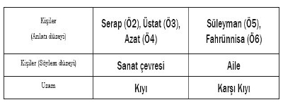
İkinci Kesit: 2. Tablo:
Geriye dönüşle hikâyenin başının anlatıldığı bu tabloda uzam Festekizlerin köşküdür. Buradan da anlaşılacağı gibi Küşat’ın içgüveysi gittiği aile Festekiz ailesidir. Festekizlerin evinde duvarda “simetrik” olsun diye iki saat vardır ve hepsi de saçları ortadan ikiye ayrılmış, gözlüklü aile büyüklerinin portreleri asılıdır. Küşat bunlarla karısı arasındaki benzerliğe hayret eder.
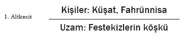
Tablonun başında Küşat ve Fahrünnisa’nın evlendikten sonra eve ilk gelişleri görülür. Yeni evli çift arasındaki konuşmalardan Festekizlerin aile yapısı ve değerleri ile Küşat’ın sanatçı kişiliğinin getirdiği değerlerin iki karşı kıyıyı temsil etmenin yanında iki karşıt kıyı niteliğinde olduğu da ortaya çıkıyor.
FAHRÜNNİSA – Neresi tuhaf?
KÜŞAT – Eviniz, evinizin içi. Dışarısı, selviler, bahçedeki... Sarmaşıklar, evi saran. (22)
FAHRÜNNİSA – (...) “Renklerden hangisi?” diye sordun. Maviyi yapıştırdım hemen. En çok yeşili sevdiğim halde.
KÜŞAT – Ya! (25) (...)
FAHRÜNNİSA – Şey ben seni mektupta mimar diye tanıttım da.
KÜŞAT – (Fena halde içerlemiştir.) Neden?
FAHRÜNNİSA – Ressam desem iş büsbütün çatallaşırdı. Seni ilk ağızda küçümsemelerini istemiyordum.(26)
(...)
FAHRÜNNİSA – (Telaşla) A oraya oturma.
KÜŞAT – (Korkuyla ayağa fırlar.) Neden?
FAHRÜNNİSA – Orası babamın yeri, her an gelebilirler.
KÜŞAT – (Öbür koltuğa oturacak olur.) Ben de buna otururum.
FAHRÜNNİSA – Orası da annemin. (26)
Festekizler, tutucu denecek kadar geleneklerine, aile bağlarına önem veren bir ailedir. Onları bir arada tutan değerin “birliktelik” anlambirimciği olduğunu söyleyebiliriz. Sanat ve sanatçılar onlar için değerli değildir. Küşat ve Festekizler arasında ilk bakışta görünen çatışmayı şöyle gösterebiliriz:
Anlambirim 2:
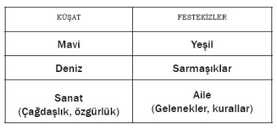
Burada mavi, ferahlığı, sınırsızlığı, özgürlüğü, denizi ve gökyüzünü simgelerken; yeşil, aslında huzurun rengidir. Fakat burada dogmatik bir huzur söz konusu. Yani dogmatik bir kurallar bütününe bağlanan, bu kuralların nedenini sorgulamadan teslim olan bir anlayışın getirdiği bir huzur. Bir yandan, Doğunun da yeşil renkle temsil edildiğini hatırlayabiliriz.
Anlambirim 3:
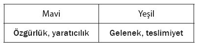
Küşat bu yeşili istememektedir, o maviyi, özgürlüğü özler, Festekiz ailesinin, onları yüzyıllardır çevreleyen ve harfiyen uygulanan kurallarla kendisini de tanımlamalarına karşı çıkmaktadır. Bu yüzden bir gün yasak olduğunu bildiği halde sarmaşıkları kesmeye çalışır. Sarmaşık da burada önemli bir imge. Çift yönlü okunabilir. Sarmaşık, bir anlamda kendisini bir başka şeyle ve bir başka şeye göre tanımlayabilir. Varlığını bir şeylere tutunarak ve bir şeyleri sararak sürdürebilir. Festekizler de bahsettiğimiz gibi yüzyıllık değişmez, çağ dışı hatta absürt kurallarla kendilerini ve hayatlarını tanımlıyorlar. Evi çevreleyen sarmaşıklar, Festekizleri dış dünyadan, uyum sağlamak istemedikleri zamandan ayırıyor, koruyor ve gizliyor. Fakat sarmaşık bir başka yönden, zamanın geçişinin de bir göstergesi. Sarmaşığın diğer bitkilere göre zamanla daha doğrudan bir bağlantısı var. Sarmaşığın büyümesi gözle görülmez ama bakarsınız, zamanla çevrelediği şeyi sarmış, kuşatmıştır. Sarmaşık, zamanın geçtiğini de gösteriyor. Zaman evin içinde donmuş gibi sanki ama dışarıda devam ediyor, sarmaşık büyüyor, evi sarıyor. Bir zaman sonra da evin içine nüfuz etmeye başlayacak. Sarmaşık bir yandan ailenin geleneğine, tarihine, ortak bilincine tanıklık eden bir imge bir taraftan da Festekizlerin kendilerini kuşatan zamana bir gün yenik düşeceklerinin de göstergesi.
Anlambirim 4:
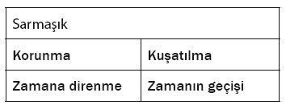
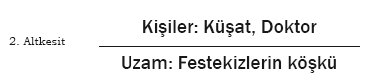
Köşke gelen Doktor (Ö7), hem Fahrünnisa’nın kız kardeşi Mihrünnisa’nın nişanlısı hem de Küşat’ın asker arkadaşıdır. Konuşmaları sırasında Festekizler’in aile yapıları iyice aydınlanır. Festekizler kızları Mihrünnisa’yı Doktor’a vermek istemezler çünkü Doktor’un babasının mesleği “çingenelikle bir tuttukları” tuluat kumpanyasında aktörlüktür. Küşat’ın sanat hayatında yeni ilhamlarla yeni eserler ortaya koymasına yardımcı olacağını düşündüğü “karşı kıyı” onun için bir engel hâline geleceği gibi onun mesleği de Festekiz ailesine kabul edilmesinde bir engel teşkil etmektedir.
Küşat/Festekizler (Engel)/Sanat hayatı
Küşat/Sanat hayatı (Engel)/Festekizler
Bu arada Doktor, Küşat’a Festekizlerin damatlarına kendi soyadlarını alma şartı koştuklarını söyler. Küşat başlangıçta karşı çıksa da sonunda çaresiz kabul edecektir ve bu da Küşat’ın bir “Festekiz” olma yolundaki değişiminin ilk adımı sayılacaktır.
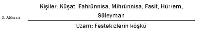
Festekizler, ailenin kutsallığına inanan, kadınları da erkekleri de tek tip insanlardan oluşan bir ailedir. Aile yaşamları asırlardır değişmeden harfiyen uygulanan tuhaf kurallarla doludur. Erkekler eve gelince “tirşe” ropdöşambır ve terlik giyerler. Saat beşte topluca ıhlamur içilir bunu yaparken serçe parmak havaya kaldırılır. Herkes gözlük takar, uykularında aynı rüyayı görürler.
Küşat’la Fahrünnisa’nın sergide tanışmalarını sağlayan ve eve gelir gelmez salonun duvarına astıkları resim, ilk elde Festekizlerin tepkisiyle karşılaşır ve Hürrem Fahrünnisa’dan tabloyu kaldırmasını ister. Fahrünnisa karşı çıkamaz ve tabloyu yatak odalarına asmaya karar verir. Tablo, oyun boyunca Küşat’ın Festekizlerle ve resimle serüveninde önemli bir gösterge işlevi görecektir.
Küşat, Festekizlerin köşkünde o an için bir yabancıdır. Fakat ona da “ev üniforması” giydirilir ve “aile yemini” ettirilir.
SÜLEYMAN – (...) Hayatta en önemli şey AİLEDİR.
HEPSİ – AİLE.
SÜLEYMAN – Bir aileye girmek, bir ev kurmak. Aile nedir peki? (Küşat’ın tembel bir öğrenci gibi duraklaması üzerine çocuklarına ve karısına döner ve bir orkestra şefi gibi girişlerini işaret ederek) Dirlik!
HÜRREM – Düzenlik.
FASİT – Birlik.
FAHRÜNNİSA – Beraberlik.
MİHRÜNNİSA – Benzerlik. (39)
Küşat’ın bireyi ve bireyselliği ön plana çıkaran sanatçı kişiliğiyle aileyi, birliği ve benzerliği kutsal sayan Festekizlerin varolma amaçları tamamen karşıttır.
Anlambirim 5:
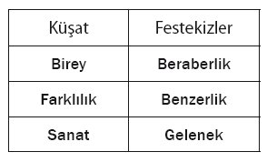
Küşat yemek sonrasında, bir ara çıkan gürültünün nereden geldiğini öğrenmek için baktığında, evin bahçesinde sarmaşıkların, selvilerin arasında değirmeni görür. “KÜŞAT – (Kendi kendine söylenir gibi) Boş mudur bunun içi? (Dönüp arkasındaki sessizliği ve asık yüzleri fark eder. Fahrünnisa’nın yanına giderek usulca) Bir pot mu kırdım? FAHRÜNNİSA – Uğursuzdur değirmeni anmak.” (41).
Böylece ilk tabloda uğursuzluğun başladığı yer olarak belirtilen ama muğlak bırakılan uzamın evin bahçesindeki eski değirmen olduğu anlaşılır.
Üçüncü Kesit 3. Tablo:
Uzam yine Festekizlerin evidir, zaman ise altı ay sonrası. Küşat da artık tirşe ropdöşambır, tirşe terlikler ve gözlükleriyle tam bir Festekizdir. Küşat bu evde aradığı ilhamı bulmak bir yana altı aydır tek bir çalışma dahi yapamamaktan şikâyetçidir.
Küşat, “Ver Elini Gökyüzü” adlı tablosunu bir gün tavuk kümesinin damında bulur. Tablonun yolculuğu salondan yatak odasına, oradan koridora ve son olarak da tavuk kümesine dek daralan bir uzamın görüntüsünü verirken tablonun adıyla da önemli bir karşıtlığı ortaya koyar:
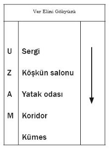
Küşat da bir eser yaratma, üretme sancısı içinde, tablosunun yaşadığı uzam daralmasının benzerini içinde hissetmekte ve nefes alacak bir pencere aramaktadır. Yasak olduğunu bildiği hâlde evi çevreleyen sarmaşıkları kesmeye çalışır. Küşat Festekizlerin evinde, “karşı kıyıda” iyice bunalmıştır artık. “Diğer kıyıdan” Azat’ın getirdiği yeni bir yarışma haberiyle heyecanlanan Küşat yarışma için hazırlanmaya başlar. Ailenin saat beşteki geleneksel “ıhlamur çayı”na altı ay sonra ilk defa “on beş dakika” geç gelir. “SÜLEYMAN – Altı aydır bir gün aksattığı olmadı da. FASİT – Dikbaşlılık belirtisi bunlar. Yavaş yavaş çıkıyor mayası ortaya.” (55)
Oysa Küşat aradığı pencereyi bulmuştur. Bu uzamın neresi olduğu üçüncü tabloda belirtilmez. “KÜŞAT – (Çok kısık bir sesle, çocuk gibi gözleri parlayarak) Bir pencere buldum, nihayet, nefes alacak.” (57)
Dördüncü Kesit: 4. Tablo:
Festekiz ailesinin uğursuz saydığı fakat Küşat’ın sığınağı, ilham aldığı, nefes aldığı yer olarak tanımladığı uzamın değirmen olduğu ortaya çıkar bu tabloda.
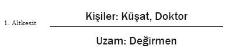
Doktor, Küşat’a Festekizlerin burayı neden uğursuz saydıklarını anlatır: “DOKTOR: Bir duysalar ama geldiğini. Korkmuyor musun? KÜŞAT – Kim duyacak. (...) En havadar, en güzel manzaralı yere uğursuz deyip çıkmışlar. DOKTOR – Bir dayıları atmış buradan kendini.” (58)
Festekizlerin ve Küşat’ın değirmen hakkındaki düşünceleri de birbirleriyle çatışmaktadır. Değirmen, Küşat için sanatına hayat veren bir ilham kaynağıyken, Festekizler için ailelerinden birisinin ölümüne neden olan uğursuz bir uzamdır.
Anlambirim 4:
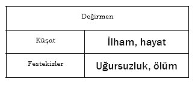
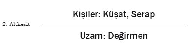
Doktor değirmenden ayrıldıktan sonra değirmene Festekizlerin yeğeni aynı zamanda Küşat’ın Akademiden unutamadığı eski aşkı Serap gelir. Uzun yıllar sonra karşılaştıklarında Küşat’ın hevesi ve heyecanı artar. Bir an içinde yarışmaya göndereceği resmi tasarlamaya başlar. Tablonun adı “Ve Değirmen Dönerdi” olacaktır.
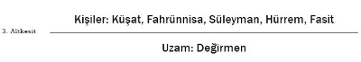
Festekizler, Küşat ve Serap’ı değirmende birlikte görürler. Serap da oğulları Fasit’i seneler önce ağaçtan aşağıya itip sakatlanmasına neden olduğu için aileden aforoz edilmiştir. Değirmen gibi Serap da Festekizler için “uğursuz” sayılmaktadır. Serap değirmenden ayrılırken Küşat da onun arkasından “öbür kıyıya” gitmeye karar verir. Küşat sanatı adına yeni başlangıçlar yapmak umuduyla geldiği Festekizlerin evinden yine aynı amaçla kaçmak istemektedir.
Yedi tablodan oluşan oyunun tam ortasında yer alan bu tabloda, Küşat’ın eski değirmendeki yaşantısının, hayallerinin ve kendisi için bir çıkış yolu arayışının yer aldığını görüyoruz. Değirmen uzamı, Küşat’ın Festekizler ile sanat yaşamı ve Serap arasında kalmışlığının, içinde bulunduğu çatışmanın açmazını simgeler.
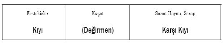
Beşinci Kesit: 5. Tablo:
Uzam, Küşat’ın atölyesidir. Yarışmaya bir gün kalmıştır ve Küşat resmiyle ilgili son değişiklikler üzerinde çalışmaktadır. Serap da ona resmi hakkında fikirler vermektedir. Atölyede çalışırken, Küşat’ın psikolojik olarak diğer kıyıya geçmiş olmanın etkisiyle rahatladığını ve eski üretkenliğine kavuştuğunu görsek de birçok noktada hâlâ bir “Festekiz” gibi davrandığını izleriz. Küşat’ın üzerinde çalışırken yine o tirşe terlikler ile ropdöşambır ve yine gözünde gözlükleri vardır, resmine simetri kurma amaçlı öğeler ekler, fırçayı tutarken serçe parmağı havaya kalkar. Resminde de eskinin aksine Festekizlerin yeşili hâkim olmaya başlamıştır.
Serap Küşat’a yarışmayı kazanabilmesi için yardım etmekte, onu yönlendirmekte ve Festekizlerden kalma alışkanlıklarının resmine yansımasını engellemeye çalışmaktadır.
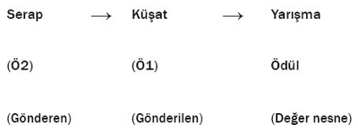
Küşat’ı ziyarete gelen Doktor, Küşat’ın atölyesini “tuhaf” bulur. “DOKTOR – (...) Ne tuhaf burası. (...) Hele senin değirmenden çok farklı. Orası ağaçların üstüydü. (Pencereye bakar) Burası ayakların altı.” (84).
Festekizlerin köşkünden kaçıp sığındığı değirmenin ona nefes aldıran ve onu yeşilliklerden kurtarıp maviliklere götüren yüksekliği, havadarlığına karşın, kaçıp geldiği “diğer kıyı”da yerleştiği uzam, aksine yeraltında, havasız ve karanlıktır. Bu uzamlar Küşat’ın ressamlığıyla ilgili yükseliş umudu ve çöküşünü de simgelemektedir.
Anlambirim 5:
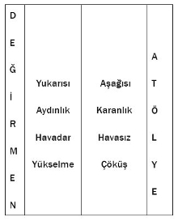
Altıncı Kesit: 6. Tablo:
Uzam yine Küşat’ın atölyesidir. Yarışmayı Küşat kaybetmiş, Azat kazanmıştır. Azat, jüri üyelerinin her birinin zevkine göre, bir gecede tablosunu hazırlamış ve kazanmıştır. Serap’ın, Küşat’ın yanı sıra Azat’la da birlikte olduğu ve ona da yardım ettiği ortaya çıkmıştır. Üstat ise Küşat’a verdiği borç paraları sadece Serap’ı elde edebilmek için vermiştir. Büyük hayal kırıklığı içinde olan Küşat Azat’a da Serap’a ve Üstat’a da ateş püskürmektedir. Küşat her iki kıyıda da tutunamamış, her iki kıyının değerleriyle de uzlaşamamıştır. “SERAP – Alt katta selvilerin içinde başın ağrıyordu. İyi alamet. Ama üst katlarda da başın dönüyordu. Aşağıyı istiyorsun. Kötü alamet. Sen ne alt katın ne üst katın, sen orta katın adamısın Küşat. İkisinin ortasında asma bir katın.”(96-97) Küşat da bu arada kalmışlığının acısını yaşamaktadır. Gırtlağına kadar borca batmış, çevresinde sanatçı geçinen insanların ikiyüzlülüğü onu yaşamdan soğutmuştur.
Küşat’ın kişiliğinde somutlaştırılan oyunun temelini oluşturan, tuhaf, hatta absürt denebilecek, kuralcı aile değerlerini savunan kesim ile sözde çağdaş ve özgürlükçü ama aslında sadece çıkarcı olan sanat çevreleri arasındaki çatışmayı şöyle belirtebiliriz:
Anlambirim 6:
Yedinci Kesit: 7. Tablo:
Uzam yine Küşat’ın atölyesidir. Yarışmayı kaybettikten sonra Küşat’ın kurtuluşu intiharda bulacağını tahmin eden Serap, Festekizlere haber yollar ve Küşat’ın intihar ettiğini söyler. Böylece Festekizler tam zamanında yetişerek Küşat’ı kurtarmışlardır. Festekizler, Küşat’ın nasıl benliğine ve kişiliğine sinmişse ve Küşat’ı âdeta evlerindeki yüz yıllık tek tip eşyalardan biri hâline getirmişse, sığındığı sanat çevresi de onu, her hareketi önceden tahmin edilebilen bir kukla hâline getirmiştir.[256] “SERAP – (...) O rapor sen doğmadan yazılmış bile. Sana şimdi ona uymak düşüyor.” (104)
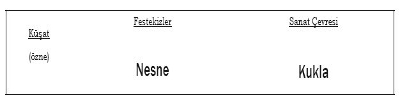
Küşat’ın ölümü duyulunca sanat çevresi tüm iki yüzlülükleriyle onu göklere çıkarmışlardır. Küşat’ın ölmediği anlaşılınca sanat çevresi zor duruma düşer, Azat, Üstat ve Serap Küşat’ın ölüsü arkasından söyledikleri yalanları başka yalanlarla kapatmaya çalışırlar. Kimliğini ve varoluş nedenini yitiren Küşat için tekrar Festekizlerin tekdüze hayatlarına sığınmaktan başka çare yoktur artık. Oyun boyunca Küşat’ın kendi çatışmaları içinde bir yol ararken kaçtığı, sığındığı yerleri, kişileri şöyle gösterebiliriz:
Anlambirim 7:
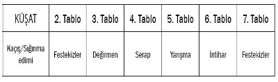
İlk tabloda Küşat’ı ölüm döşeğinde bırakan seyirci, olayları geri dönüş tekniğiyle izledikten sonra son tabloda seyircinin beklentisi tersine çevrilir ve Küşat’ın ölmediği anlaşılır.
Kurgusu itibarıyla ...Ve Değirmen Dönerdi, sağlam bir yapı üzerine kurulmuş bir oyun olarak karşımıza çıkıyor. 1. ve 7. tablolar yaşam/ölüm karşıtlığını, 2. ve 5. tablolar bir yerde tutunmaya çalışmayı, 3. ve 6. tablolar da bir yerde tutunamamayı gösterir. 4. tablonun uzamı olan değirmenin oyunda ara uzam olarak değerlendirilebileceği gibi 4. tablo da oyunun yapısında bir ara tablo niteliğindedir.
Aile ilişkilerinde son derece tutucu olan Festekizler’le diğer yanda çağdaş bir tavır ve özgürlüğü savunan ama aslında çıkar ilişkilerine bağımlı yaşayan sanat çevresi arasında kalan Küşat, öncelikle varolma savaşı vermiş ve yenilmiştir. Oyun süresince izleyicinin, Küşat’ın yalnızlığını hissetmesi ve paylaşması sağlanmıştır. İlk tablo sonunda koma hâlindeyken bırakılıp geri dönüşlerle hikâyesi anlatılan Küşat’ın ölmediğinin son tabloda görülmesiyle izleyici beklenmedik bir sonla sarsılmıştır. Fakat izleyicinin duygusal birikimini boşaltmasına izin verilmemiştir ve bu da izleyicinin konuya eleştirel bir gözle bakabilmesini sağlamıştır.
...Ve Değirmen Dönerdi oyununda, oyunun temel çatışmasını somutlaştıran Küşat karakterinin oyun içindeki dönüşümünü göstergebilimsel dörtgen[257] ile şöyle gösterebiliriz: Anlatının başlangıcında ölü olarak görülen ama sanatı değer gören ve yaşatılan Küşat, anlatının sonunda hayatta kalmasına rağmen sanatı hiçe sayılır unutulur.
...Ve Değirmen Dönerdi, 1950’lerin değişen Türkiye’sinde, iki karşıt yaşama biçiminin oluşturduğu karşıt değerler çatışması içinde bağlı olduğu değerleri ancak “söz düzeyinde” savunabilen ve yaşadığı çatışmada sürekli başladığı yere dönen, ve sonuçta tek eylemi “eylemsizlik” olarak yitip giden bireyin öyküsüdür.